ASP.NET - Ferramentas
Para a utilização da plataforma ASP-NET são necessárias algumas instalações. Esta página inclui informações detalhadas para ajudá-lo a instalar as ferramentas necessárias para o desenvolvimento de uma aplicação ASP.NET. Também incluímos links para ajudá-lo rapidamente a obter informações de recursos, downloads, e muito mais.
Visual Studio 2015
Padrão Vs. Instalação personalizada:
Quando você instala o Visual Studio 2015, você pode incluir ou excluir componentes que você deseja usar em uma base diária. Isso significa que uma instalação padrão será muitas vezes menor e instalar mais rápido do que uma instalação personalizada. Isso também significa que muitos componentes que foram instalados por padrão em versões anteriores agora são considerados como componentes personalizados que você deve selecionar explicitamente nesta versão.
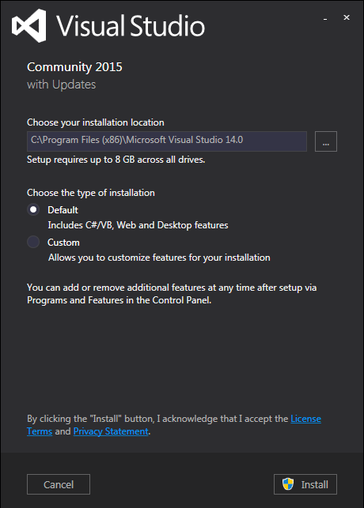
Componentes personalizados incluem o Visual C++, Visual F #, SQL Server Data Tools, ferramentas de plataforma cruzada móveis e SDKs e terceiros SDKs e extensões. Você pode instalar qualquer um dos componentes personalizados em um momento posterior, se você não os selecione durante a instalação inicial.
Para a instalação do Visual Studio concluir, basta clicar em "Instal", selecione próximo(Next), e, em seguida, siga as instruções restantes. Após o término, basta reiniciar o seu computador.
SQL Server Express
O SQL Server pertence à Microsoft e é um sistema gerenciador de banco de dados.
Para instalar o SQL Server Express 2012, você pode acessar a página oficial de download da Microsoft e seguir os seguintes passos:
Clique no botão de download.
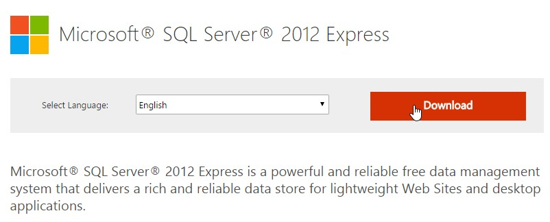
Escolha a terceira opção e clique no botão de download.
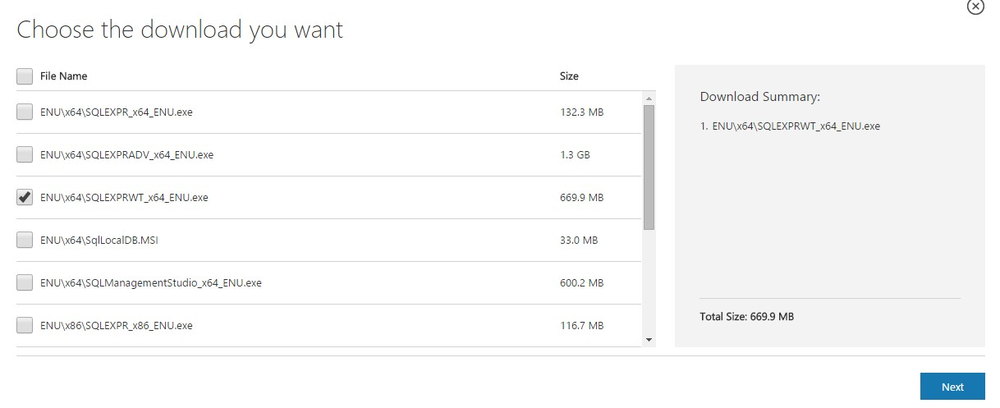
Aguarde o término do download.
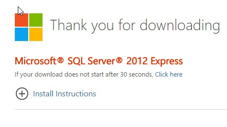
Clique no executável do instalador.
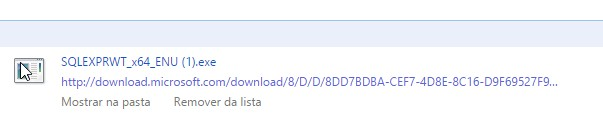
Aguarde o carregamento do instalador.
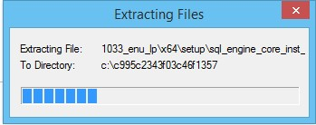
Clique no link destacado.
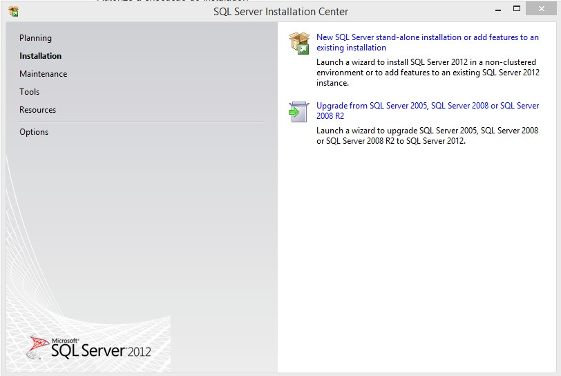
Marque a caixa destacada para aceitar a licença de uso e depois clique no botão “Next” (“Próximo”).
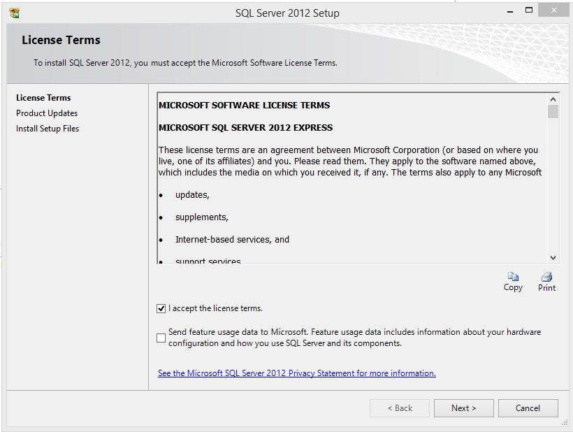
Clique no botão “Next” (“Próximo”).
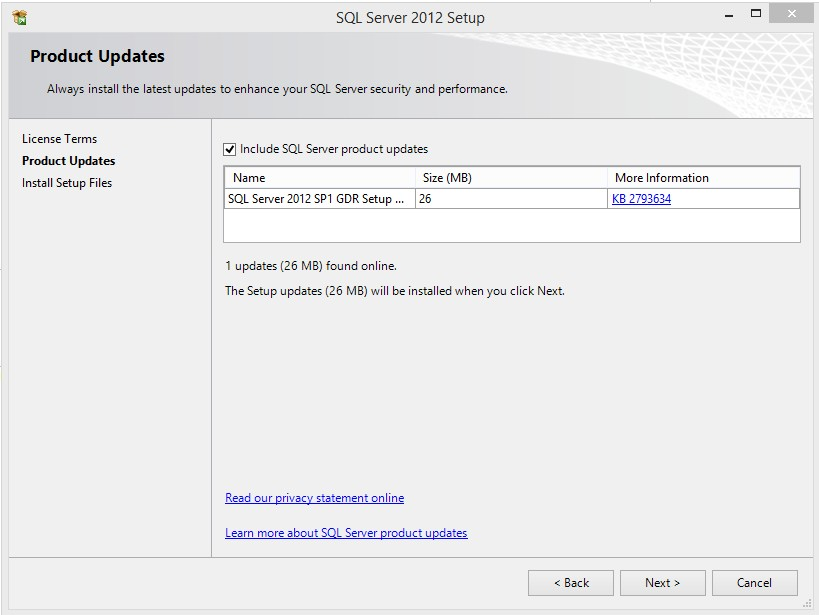
Aguarde a configuração da instalação.
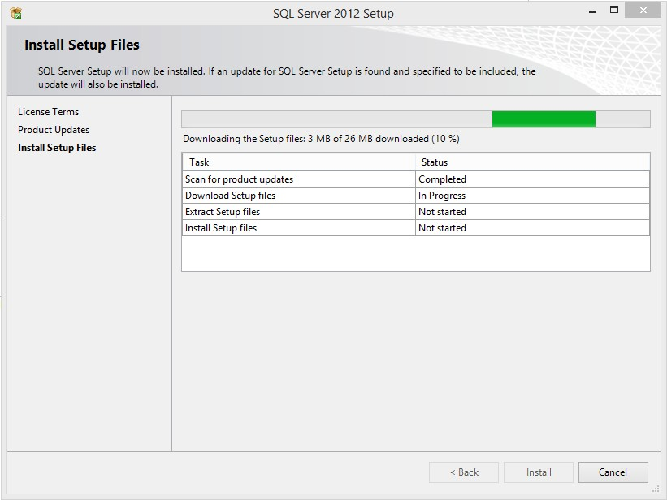
Clique no botão “Next” (“Próximo”).
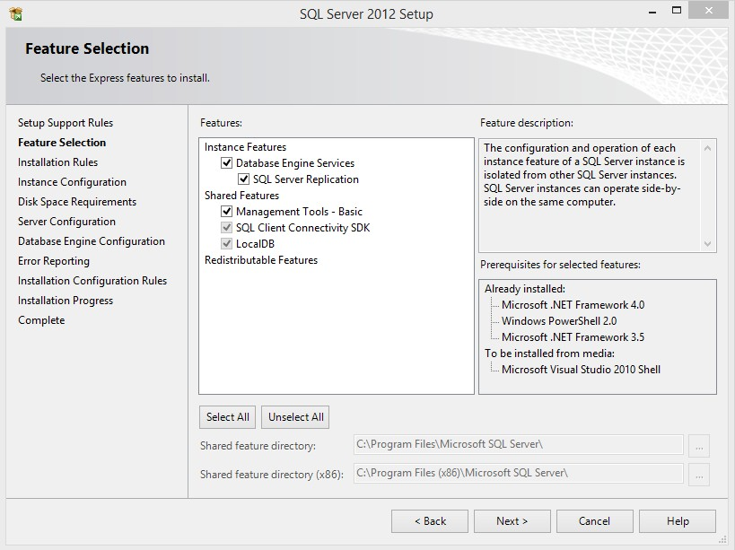
Clique no botão “Next” (“Próximo”).
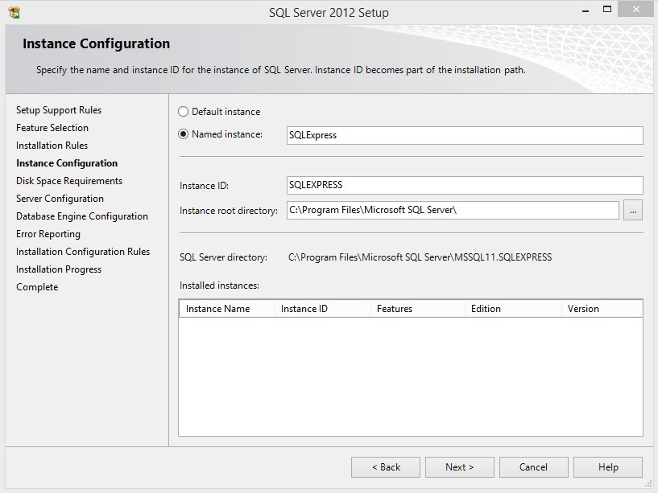
Clique no botão “Next” (“Próximo”).
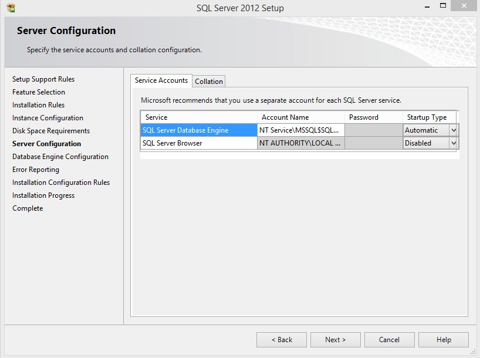
Clique no botão “Next” (“Próximo”).
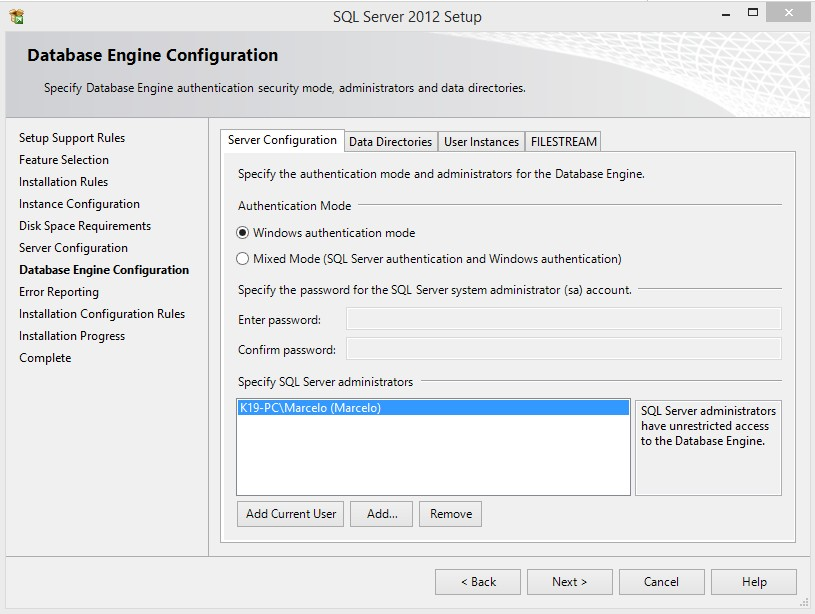
Clique no botão “Next” (“Próximo”).
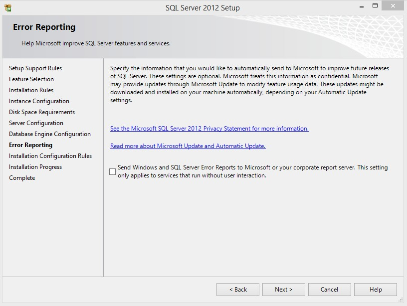
Aguarde o término da instalação.
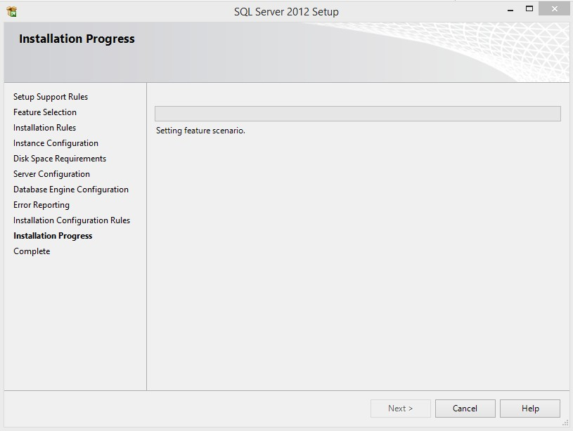
Clique no botão “Close” (“Fechar”).
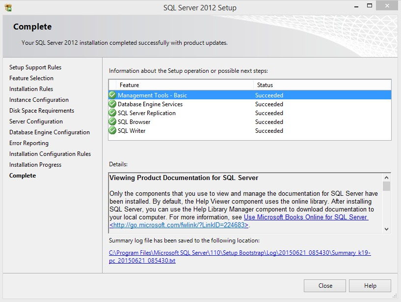
Entity framework
EF, como o próprio nome sugere, é um framework do tipo ORM(Object/Relational Mapping) que permite tratar e manipular dados relacionais como classes e objetos de domínio. Por ser desenvolvido, mantido e disponibilizado pela Microsoft, ele se integra de forma otimizada às tecnologias disponíveis na plataforma .NET com performance, segurança e robustez. Com o EF, os desenvolvedores podem lançar consultas usando LINQ, e depois recuperar e manipular dados como objetos fortemente tipificados.
As capacidades avançadas do Entity Framework:
Você pode saber mais sobre o Entity Framework através deste link.
knockout.js
KnockoutJS é uma biblioteca que simplifica a construção de interfaces gráficas dinâmicas, com Javascript, através da utilização de MVVM.
Como obter?
Você pode obter KnockoutJS diretamente do site (o js tem apenas 40K), ou através do Nuget.
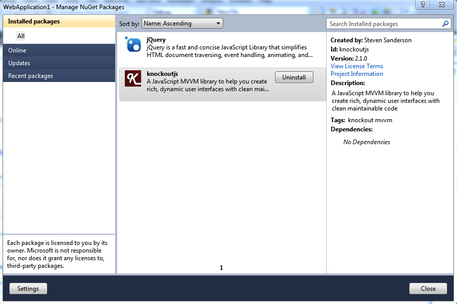
Bootstrap
Trata-se de uma biblioteca de CSS (Cascading Style-Sheet) e componentes jQuery que facilita o trabalho de estruturar ou criar novos layouts para aplicações. Já está integrado no Visual Studio.
jQuery
É uma das mais famosas e funcionais bibliotecas baseadas em javascript do mundo. Facilita o trabalho e manipulação dos objetos DOM (Document Object Model), chamadas Ajax, manipulação de eventos e animações. Já está integrado no Visual Studio junto ao Bootstrap.